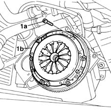
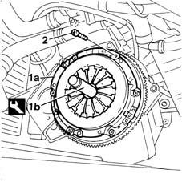
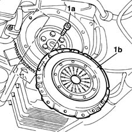
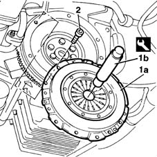

1810A24 clutch - r + r with gearbox removed
- Path
- Procedures > 18 CLUTCH > 1810 CLUTCH MECHANISMS > 1810A clutch mechanism > 1810A24 clutch - r + r with gearbox removed
- Kind
- repair procedure (removal / refitting; the operation number is the code)
- Applies to
- all engines; all production periods
- Interactive page
- https://sloeber94.github.io/elrnDB-fMltpl/en/#/2891521
Applies to: engines: 1.6 16v; all production periods
 Removing
Removing
 Refitting
Refitting1. Undo the retaining bolts (1a), then remove the pressure plate (1b) complete with driven plate.

Applies to: engines: 1.6 16v; all production periods
Refitting
RemovingCheck the condition of the driven plate and pressure plate.
If there is excessive wear on the driven plate's friction linings, either the linings or the complete driven plate must be replaced.
If the pressure plate shows signs of wear, overheating or deep scoring, replace the assembly.
If necessary, check using the specific equipment, that the driven plate is no more than 0.25 mm off centre.
1. Line up the driven plate for fitting the clutch assembly (1a) using the centring pin (1b).
2. Tighten the bolts securing the clutch to the engine block.
 | Name | Country |
|---|---|---|
1b | Clutch centering | 1.870.447.000 |

Applies to: engines: 1.9 JTD 8V; all production periods
Removing
Refitting1. Undo the retaining bolts (1a), then remove the pressure plate (1b) complete with driven plate.

Applies to: engines: 1.9 JTD 8V; all production periods
Refitting
RemovingCheck the condition of the driven plate and pressure plate.
If there is excessive wear on the driven plate's friction linings, either the linings or the complete driven plate must be replaced.
If the pressure plate shows signs of wear, overheating or deep scoring, replace the assembly.
1. Line up the driven plate for fitting the clutch assembly (1a), using the centring pin (1b).
2. Tighten the retaining bolts to the specified torque.
| Name | Country |
|---|---|---|
1b | Counter-torque | 1.860.846.000 |
